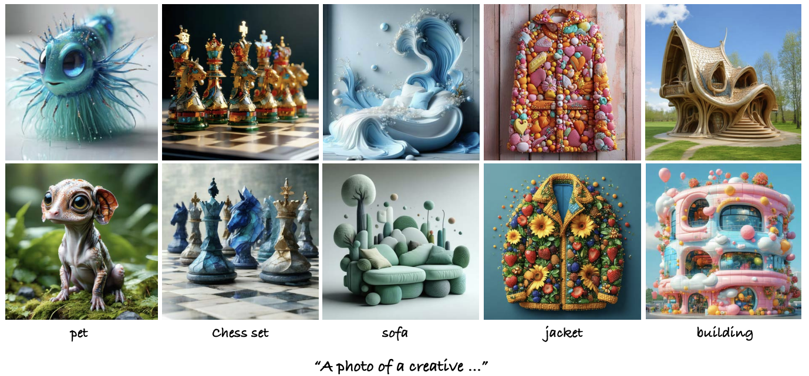
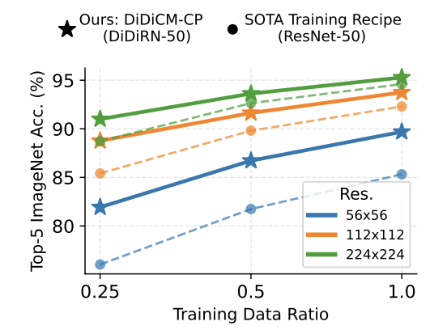
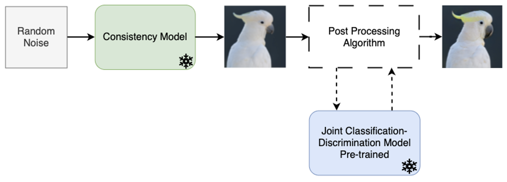

ParetoSlider: Diffusion Models Post-Training for Continuous Reward Control
Preprint
PhD Student, Tel Aviv University
I'm a PhD student at Tel Aviv University, advised by Dr. Or Patashnik. I obtained my MSc at the Technion under the supervision of Prof. Michael Elad.
I work on image and video generation, creative synthesis, and post-training alignment of generative models — aiming to make visual content creation more controllable and expressive.
Away from the screen, you'll find me shaping clay at the pottery wheel or out on mountain trails.
Preprint


CVPR 2026 Oral
